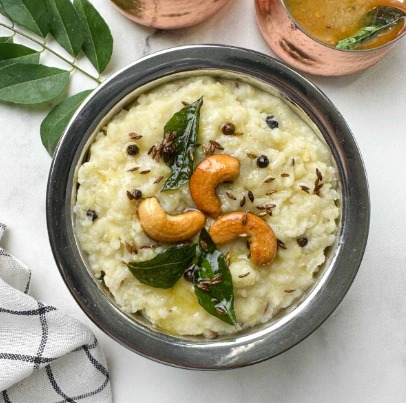

I am Mahitha sri Kurri, I have completed my bachelor's degree in electronics and communication from vignan's lara institute of science and technology. My education has provided me with solid foundation in programming, problem-solving, and software development. In addition to my academic purcuits, I am also deeply passionate about my hobbies like watching tv, reading books.
Some foods are comforting. Some are nutritious. And some are simply divine. Pongal is one such dish which is comforting, nutritious and also divine. Just the thought of ‘Pongal’ conjures up sweet memories of my family.
